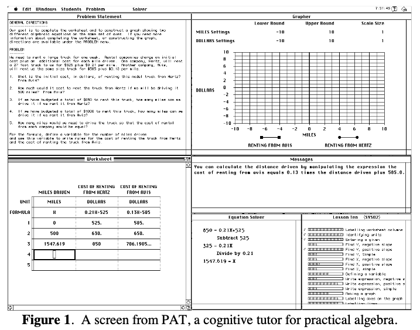
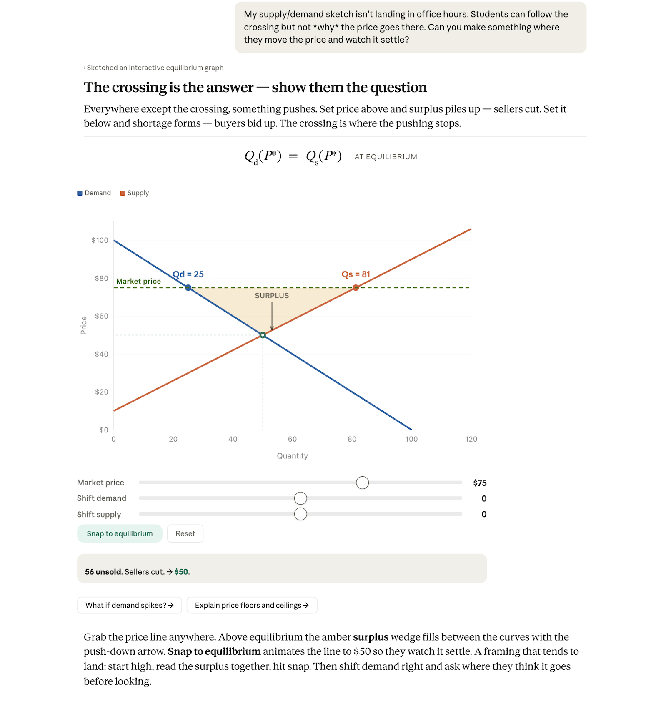
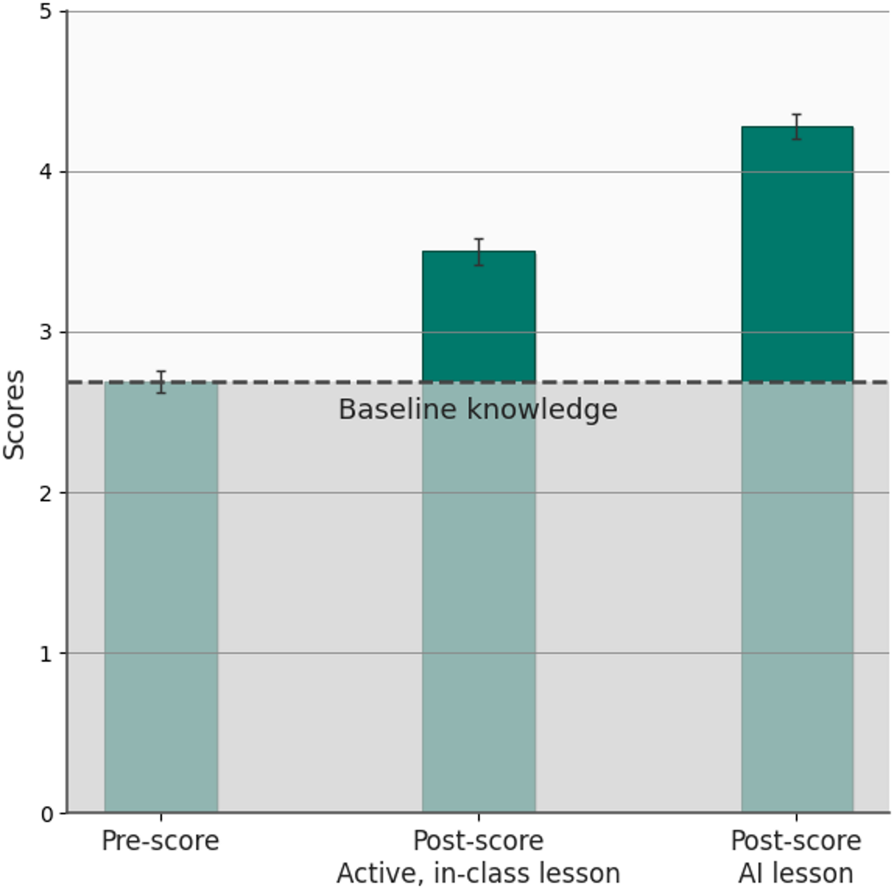
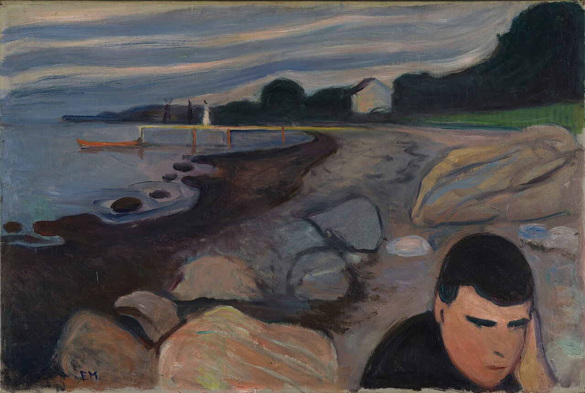

the use of academic ai as an educational accelerator
you: hey ai do my essay
ai: no
ai: do it urself
2. early computer tutors
in the early 1960s, the university of illinois developed PLATO. a framework in which students could work through lessons on a computer terminal and enter their answers as they went.
3. tutors that adapt
and in 1998, carnegie learning launched cognitive tutor for high school math. it could give students feedback as they worked through a problem.

4. the chatbot shift
one tool can now combine writing, math and code in a single response.

5. handing off the thinking (outsourcing)
gemini remembers a book title for you (0:00–0:22)
what happens when the thing you hand off is the thing you're supposed to learn?
6. the harvard experiment
194 undergraduate physics students took part in a study across two lessons in which each student used the ai tutor for one lesson and attended an active classroom lesson for the other.
7. what they found
more than twice the median learning gain with the ai tutor in this study!
the researchers measured how much quiz scores improved immediately after each lesson.

8. how they designed the tutor
the researchers gave the tutor teaching instructions and broke problems into smaller steps so students could ask for help as they worked and move at their own pace

9. two ways to ask
- (outsourcing) solve this physics problem for me
- (building) how do i tell which forces cancel?
only one ends up helping you on an exam!
10. going forward
what can you change?
if you tend to use ai in your schoolwork, i would encourage you to keep doing so. but why? well i believe that because rather than outsourcing yourself you can use ai to intro and teach you new skills. for example, in the past ive used ai to learn about things such as making this site, in which i did not know that the html shorthand '../' means to go up a folder, and now i get to know it forever! pretty neat!
sources
- plato example, computer history museum
- cognitive tutor, carnegie learning (cmu)
- gemini glasses demo ted talk
- kestin et al. ai tutoring outperforms in-class active learning (2025)
- ejiri in suruga province, the met
- plato 3 terminal photo, university of illinois archives
- pat screenshot, carnegie mellon
- learning gains chart kestin et al. (2025) figure 1 (CC BY-NC-ND 4.0)